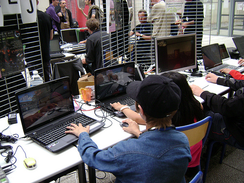
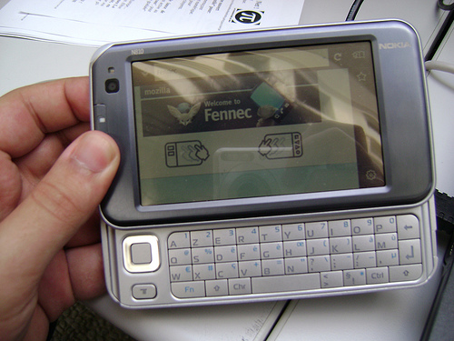
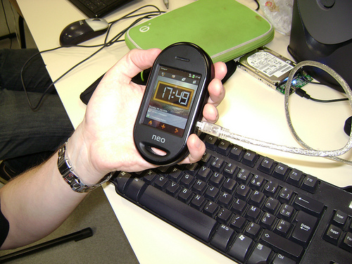
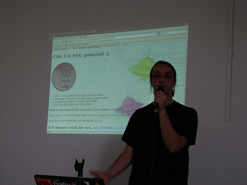
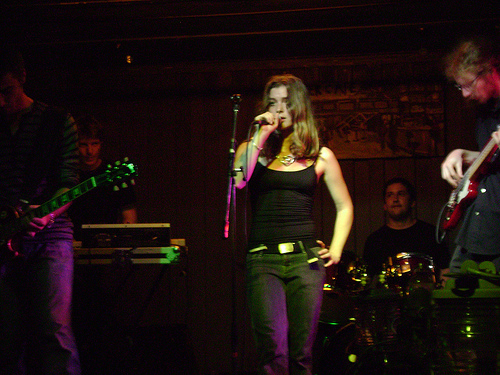

19 juillet 2009
Bilan des RMLL 2009
La semaine dernière j'étais aux Rencontres Mondiales du Logiciel Libre, une première pour moi !
Tout d'abord, je représentais le logiciel Songbird ainsi que notre blog Frenchbirds au village associatif, vous pouvez lire le bilan ici.
Les RMLL m'ont permis de découvrir pas mal d'associations comme LTLJ, comprenez "La Tête Les Jambes" qui développe une plateforme de jeux en réseau libre basé sur Debian/Ubuntu. Un serveur vous permet de démarrer le jeu sur tous les postes clients ainsi que de rejoindre la partie. Vous pouvez facilement programmer des matchs de tel heure à telle heure et faire une pause en déconnectant les joueurs.
[caption id="attachment_408" align="aligncenter" width="450" caption="Jeux en réseau via la plateforme LTLJ"]

[/caption] J'ai aussi pu tester des téléphones portables comme le Nokia N810 avec la navigateur Fennec (Firefox Mobile) en cours de développement ainsi que l'Open Moko, téléphone tournant sur Debian. [caption id="attachment_409" align="alignleft" width="216" caption="Fennec sur le Nokia N810"]
[/caption] [caption id="attachment_410" align="alignleft" width="216" caption="L'Open Moko"]
[/caption] | | | | | | | La navigation sur Fennec est plutôt fluide cependant l'installation des extensions est encore hasardeuse (Je n'ai pas réussi à installer GraffiTwit :( ) Le navigateur se basant directement sur le code source de Firefox, on a accès à toutes les fonctions audio/vidéo, géolocalisation ainsi que la possibilité d'appeler un numéro en cliquant dessus. Fennec est disponible en version beta 2 pour Maemo (Nokia N810) et en version alpha 2 pour Windows Mobile. L'Open Moko quant à lui est un système d'exploitation libre pour le téléphone Neo FreeRunner entièrement programmable basé sur la distribution Debian du monde Linux. Il est même possible d'installer Android sur ce téléphone. :) Sur le stand OLPC, "One Laptop Per Children" (en français : Un portable par enfant), j'ai découvert le XO-1, un modèle d'ordinateur portable peu cher, résistant et faible en consommation électrique. Celui-ci est surtout réservé aux écoles dans les pays en voie de développement. Il intègre une interface très simple pour travailler à plusieurs et des logiciels libres pour l'éducation. L'engin dispose de deux antennes Wi-Fi, ports USB, Webcam, l'écran peut pivoter et se rabattre pour passer en mode lecture. Les RMLL, c'est aussi les conférences ! Parmi celles aux quelles j'ai participé :- L’écosystème du Libre et le rôle des distributions : l’exemple de Debian et Ubuntu
- Processus de release et de développement d’Ubuntu
- Firefox 3.5, HTML 5 et au-delà
- Conférence Richard Stallman

[/caption] Mais la conférence à ne pas rater était celle de Richard Stallman, figure emblématique du logiciel libre ! Il est le créateur du projet GNU et le fondateur de la Free Software Foundation. Pour plus d'information, rendez-vous sur l'article dédié sur Freenews. Qui dit RMLL, dit rencontres ! Cet événement m'a permis de rencontrer bon nombre de personnes et contributeurs de chez Mozilla mais aussi des personnes avec qui je travaille sur le blog Frenchbirds. :) J'ai aussi eu l'occasion de discuter avec des utilisateurs passionnés des logiciels Firefox et Songbird. Les RMLL, ce n'est pas que des geeks, c'est aussi des artistes ! Durant toute la semaine, des concerts libres étais organisés, j'ai assisté à celui du groupe Lonah, du rock "hallucinée" que je recommande fortement ;) [caption id="attachment_424" align="aligncenter" width="450" caption="Lonah"]
[/caption] Mes photos des RMLL, du concert de Lonah et de la conférence de Stallman sont disponibles sur mon compte Flickr et je vous invite si vous avez des photos à les ajouter au groupe RMLL 2009 créé à cet effet. J'ai vraiment apprécié cet événement et c'est avec plaisir que je participerai surement aux RMLL 2010 à Bordeaux avec peut être un stand Frenchbirds ainsi qu'encore plus de goodies ! Pour finir, je vous invite à lire mes articles précédents sur Dogmazic et Mozilla Europe.
Commentaires 2